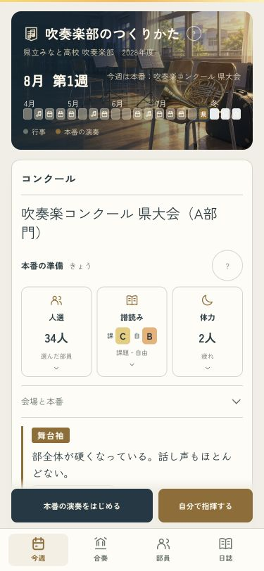
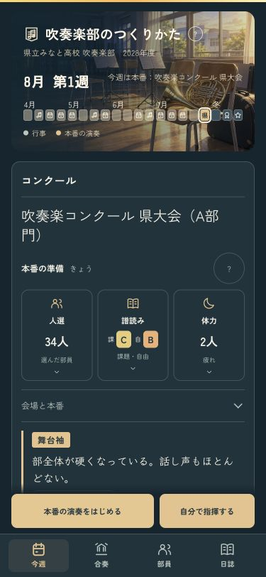
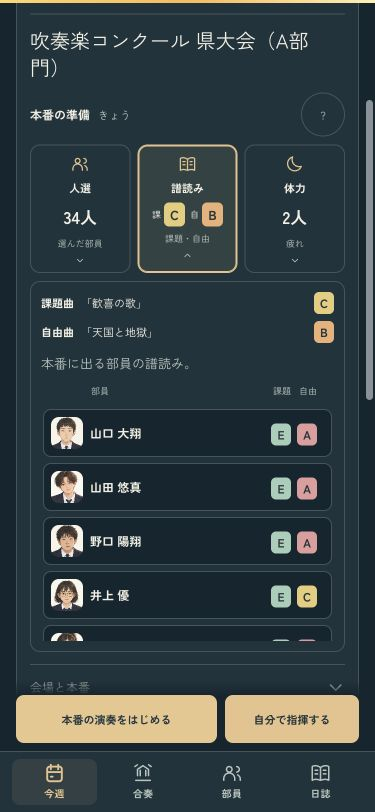
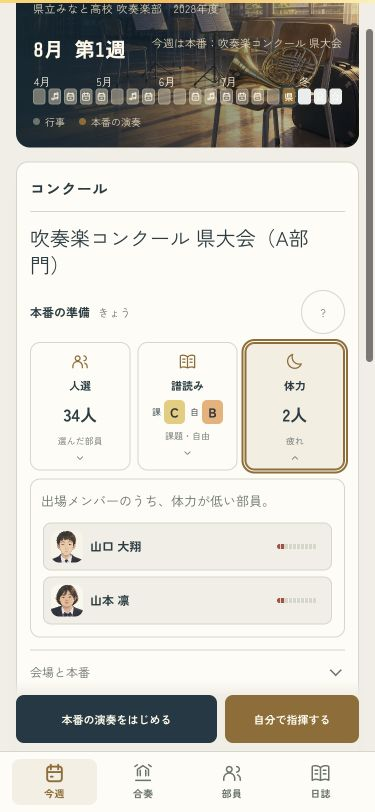
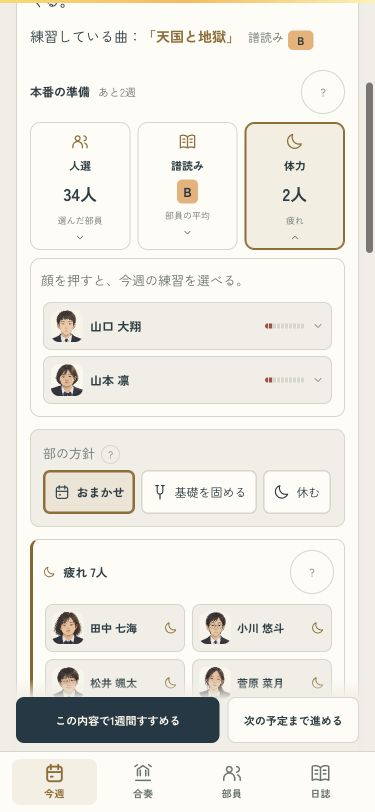
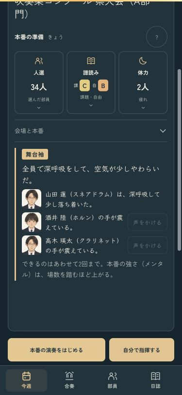
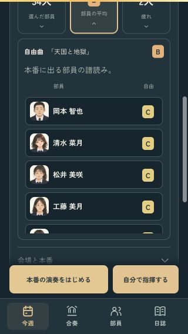

本番の前に、3つだけ確かめる
人選・譜読み・体力を、実際に出る部員で確認。詳しく見たい項目だけを開き、演奏開始と指揮はいつも手元に置きました。
本番前を試す · 練習から準備する · 確認記録
実際に出る34人の準備・ライト
同じ準備・ダーク
2曲の譜読みを、顔で確認
疲れた出場者だけを見る
練習への移動・舞台袖・小さい画面
練習週は、顔から今週の指示へ
舞台袖で声をかける相手にも顔を
320pxでも開始操作は画面内
確認ページは本物のセーブと設定を変更しません。iPhoneへのインストール・起動も成功しています。実機での表示と操作は未確認です。